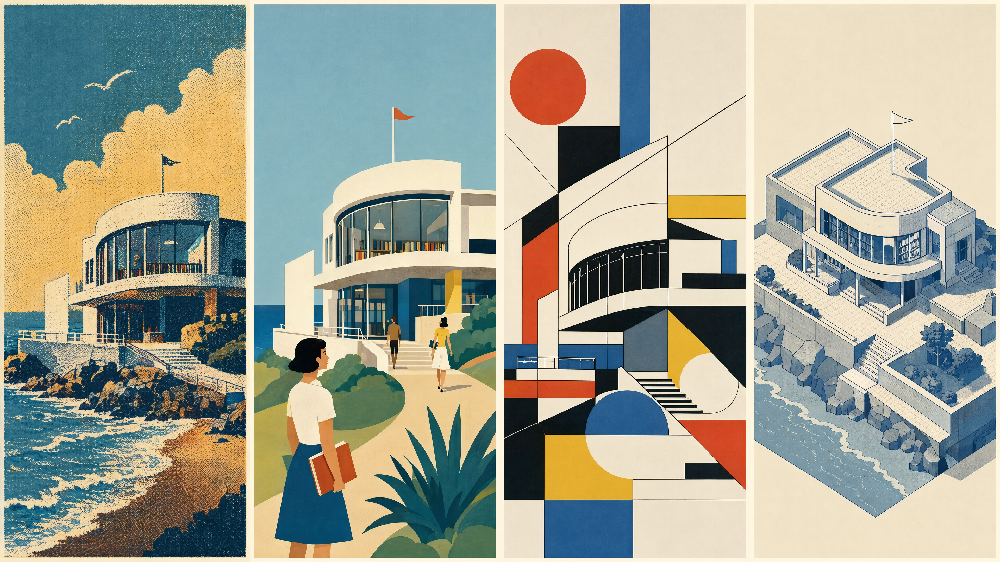
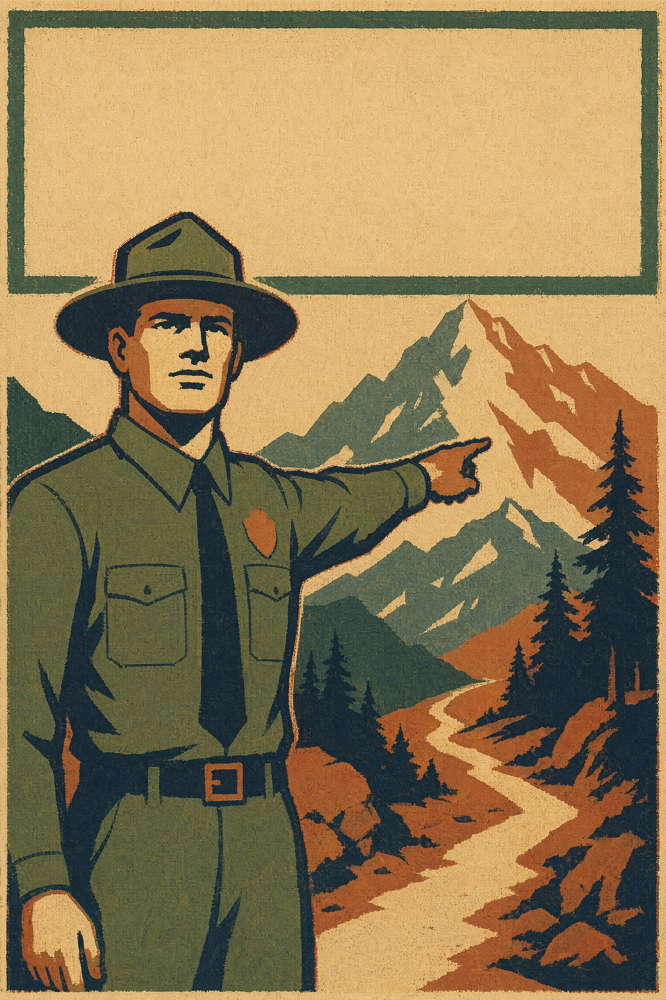

年代感不是棕色滤镜，暗系不是全黑，几何也不是随便画几个圆

“retro American poster”经常得到一张现代矢量插画加黄褐滤镜。它有旧颜色，却没有旧工艺。真正能承载年代感的，是当年商业印刷的限制与缺陷：色版少、网点粗、套印不准、油墨在吸水纸上轻微洇散、纸张随时间氧化变黄。它们不是后期装饰，而是生产过程的记录。
| 工艺痕迹 | 机制 | 提示词 |
|---|---|---|
| 有限套色 spot color | 每加一种专色就多制一块版、多跑一次印刷，成本上升。因此画面常以 3–5 色完成，混合色靠叠印 | printed with four flat spot-color inks |
| 网点 halftone dots | 印刷机无法连续改变油墨浓淡，用点的大小与密度模拟中间调；网线越粗，点越可见 | coarse visible halftone dots in midtones |
| 套印不准 misregistration | 纸张伸缩或进纸偏移，使不同色版错开 0.5–2 mm，轮廓旁露出细小色边 | slight 1 mm color misregistration at selected edges |
| 油墨洇散 | 未涂布纸吸收油墨，边缘沿纤维扩散，细线略变粗 | ink feathering into uncoated paper fibers |
| 纸张泛黄 | 木质素氧化使纸底变暖，并产生不均匀斑点 | oxidized warm paper, subtly darker at exposed edges |
缺陷要小而有因。把套印错位写成 1 mm，是为了避免模型把画面做成故障艺术；把纸黄写成边缘略深，是为了避免一层均匀棕滤镜。不同年代还要靠构成、题材与色板区分。
美国公共事业振兴署（WPA）时期的海报要在街头远距离传达公共信息，法则是：巨大概括形、粗轮廓、有限套色、短而醒目的标题区域。人物和风景被压成近似木刻的色块，不追求细腻表情。
a monumental park ranger pointing toward a mountain trail, large simplified silhouette against stepped mountain shapes, even frontal light expressed as three flat value blocks, 1930s WPA public-service poster, bold dark contour, four flat spot-color inks, coarse screen-printed texture, slight 1 mm misregistration and ink feathering on uncoated paper, no gradients, no photographic detail, vertical poster, large empty title band across the top --ar 2:3
模型：MJ v8.1 · 画幅 2:3 · --stylize 100
色板：#24333B 炭蓝、#D55B3E 铁锈红、#E3B75A 芥黄、#E9DFC5 旧纸。炭蓝承担最深轮廓，不用纯黑，印刷感更自然。

战后广告以家庭消费为主题：明亮厨房、汽车、公路、家电与夸张的礼貌笑容。肤色常被压缩为暖桃色中间调 + 少量朱红腮颊 + 冷灰或深棕阴影，不是现代照片式的细腻肤色渐变。构图常把产品放在前景，人物视线和手势都指向它。
a smiling family serving breakfast around a new chrome toaster, the mother's hand and every gaze directing attention to the product, bright frontal studio light, skin rendered in two flat tones: warm peach base with small vermilion cheek accents, 1950s American magazine advertisement illustration, gouache painting reproduced by four-color offset lithography, visible halftone rosette in skin midtones, slight cyan-magenta misregistration, optimistic turquoise, cherry red and butter-yellow palette, full-page vertical ad, clear empty area for headline and price copy --ar 3:4
模型：Seedream 5 · 画幅 3:4 · 负面词：modern kitchen, photorealistic skin, cinematic color grading, contemporary typography
色板：#4EAAA5 青绿、#D8463D 樱桃红、#F2D36B 奶油黄、#F2B39A 桃肤色、#493B36 深棕。
70 年代的暖调不只是“怀旧”。当时室内材料、服装染料和印刷设计共同偏向鳄梨绿、芥末黄、焦橙与深棕；摄影胶片与廉价纸印刷进一步压低蓝紫、高光变暖、阴影带颗粒。
two hikers resting beside a geometric tent in a pine forest, late-afternoon side light reduced to two broad value zones, 1970s outdoor-catalog illustration, simplified screen-printed shapes, rounded period lettering area, limited palette of avocado green, burnt orange, mustard and dark brown, coarse halftone grain, uneven ink density, yellowed matte paper, slight registration drift, no digital glow, landscape catalog spread with product space at lower right --ar 3:2
模型：FLUX.2 · 画幅 3:2 · 负面词：neon, cyan highlights, glossy digital render, modern technical clothing
色板：#6E7934 鳄梨绿、#C75A2A 焦橙、#D0A536 芥黄、#4B3027 深棕、#D8C59E 泛黄纸。
Mid-century modern 插画的核心不是“几何”，而是选择性概括：只保留使对象可辨认的关键差异，其余体积、毛发、材质全部删掉。动物尤其适合——一只鸟可以只剩泪滴状身体、三角喙、圆眼和两条线腿。
Alexander Girard 的装饰图形与 Charley Harper 的极简动物都可作为已故设计史指称；商业提示词仍优先写形式：基本几何组成的轮廓、有限色板、不完美的套印纹理、没有透视体积。
a red cardinal perched among three snow-covered pine branches, the bird reduced to a teardrop body, triangular crest and beak, one circular eye and two straight legs, flat geometric shapes, no anatomical modelling, five-color limited palette, no gradients, no cast shadows, mid-century modern editorial illustration, slightly uneven screen-printed ink texture on warm paper, asymmetrical composition with a large quiet cream area at right, landscape magazine header with room for text --ar 3:2
模型：MJ v8.1 · 画幅 3:2 · --stylize 75
色板：#C74336 枢机红、#243B35 松绿、#77A7A0 雾青、#E0B84E 赭黄、#F2E8D2 奶油纸。
把眼睛和颜色暂时遮住，只看外轮廓：还能认出物种，说明概括有效；认不出，说明删掉了关键特征。再眯眼看：若动物和背景融成一团，就加强剪影的明度差，而不是加毛发细节。极简不是信息少，而是每条信息都不可替代。
暗系画面的第一目标仍是可读。方法不是把所有颜色向黑色拉，而是建立面积关系：约 70–85% 的低明度底场，10–25% 的中明度结构面，再用不超过 5% 的高饱和点缀锁住视线。暗底让眼睛适应，小面积亮色因此显得比实际更亮。
| 问题 | 错误做法 | 正确做法 |
|---|---|---|
| 暗部死黑 | RGB 三通道一起降到 0，形体信息消失 | 保留色相偏移：冷暗部用蓝紫，暖暗部用深棕红；最深值也留少量色彩 |
| 暗而发脏 | 所有颜色都降饱和，再叠灰雾 | 大面积低饱和底场 + 极小面积高饱和纯色，避免中间到处半饱和 |
| 主体读不出 | 靠纹理和局部高光救细节 | 先看剪影：主体轮廓与背景至少拉开一个明确明度级 |
| 没有空间 | 前中后景都用同一个黑 | 近景冷黑、主体暖暗、远景略提明度或反向安排，建立色相分层 |
a lone observatory on a basalt cliff above a black sea, the building silhouette clearly separated from a deep blue-violet sky, low-key moonlight from upper right, one narrow warm window accent, 80 percent low-value field, 15 percent muted midtone structure, less than 5 percent saturated amber focal accent, shadows retaining cool blue-violet hue, never pure black, flat graphic editorial illustration with crisp silhouette, limited palette, subtle paper grain only, no muddy grey fog, wide book-cover wrap with quiet space on the left --ar 2:1
模型：Seedream 5 · 画幅 2:1 · 负面词：crushed blacks, grey haze, random neon, bloom, indistinct silhouette
色板：#111827 深靛底、#25233F 蓝紫暗部、#4A3543 暖紫褐中间面、#F2A93B 琥珀点缀、#C9D4E5 月光灰蓝。避免 #000000；它只应在必须打穿的最小缝隙里出现。
把图临时转成灰度：主体若消失，先修明度分组；灰度可读但彩色发脏，再查暗部色相是否混乱。暗部最多保留两条色相路线，例如“背景冷蓝紫、主体暖褐”，不要同时塞进绿、紫、棕三套暗色。最后检查高饱和点缀是否超过 5%；一旦到处都亮，暗场就失去对比支点。
“colorful geometric architecture”太宽，至少包含三套互不相同的制度：孟菲斯以反秩序和表面图案制造玩乐感；包豪斯以基本形、三原色和功能秩序组织版面；当代等轴测插画则用固定投影与单一光向构造可读空间。不能把三套词塞进一条提示词。
1980 年代的 Memphis Group 反对现代主义“形式服从功能”的严肃，常用不稳定组合：锯齿、波浪、散落小点、斜放的层压板图案、彼此冲突的高饱和色。形体看似随意，却靠大形与小纹样的尺度反差维持秩序。
an imaginary hotel lobby composed of oversized arches, cylinders and zigzag stairs, asymmetrical off-grid arrangement with unstable playful balance, flat frontal light, no realistic material shading, 1980s Memphis design vocabulary, large blocks of turquoise, hot pink and yellow, small black squiggles, dots and terrazzo patterns confined to selected surfaces, matte laminate and painted wood, crisp hard edges, wide editorial interior illustration with clear floor silhouette --ar 16:9
模型：FLUX.2 · 画幅 16:9 · 负面词：minimalist beige interior, photorealism, metallic luxury, soft gradient
色板：#21B6B2 青绿、#F04E98 热粉、#FFD447 亮黄、#E75B37 橙红、#191919 图案黑、#F4EEE5 暖白。黑色只用于小纹样和轮廓，不能吞掉大形。
包豪斯不是“红黄蓝圆方三角”贴纸包。基本形要和信息层级对应：圆作为视觉锚，矩形建立网格与文字带，三角制造方向；颜色面积通常不均等，由一种主色、一种辅色和一处强调色构成。
a cultural center facade organised on a strict modular grid, one large red circle anchoring the entrance, yellow rectangular volumes defining horizontal circulation, a small blue triangular canopy indicating direction, primary geometric forms performing clear architectural functions, Bauhaus modernist poster illustration, flat primary colors with warm white concrete and black structural lines, no ornament, no gradients, no decorative pattern, frontal elevation combined with a clean poster grid, vertical exhibition poster with title area aligned to the left module --ar 2:3
模型：MJ v8.1 · 画幅 2:3 · --stylize 50
色板：#D62E2E 红、#F2C230 黄、#1E4E9D 蓝、#151515 结构黑、#F1EBDD 暖白。建议面积约 45% 暖白、25% 黑与灰结构、18% 红、8% 黄、4% 蓝，避免三原色平均分导致儿童玩具感。
等轴测投影（isometric）让三条主轴等缩率呈现；在常见屏幕画法中，两条水平轴约为 ±30°，竖线保持垂直，平行线不汇聚。最常见翻车是局部偷偷出现消失点，或每栋楼各有一套光向。正确做法是统一：
true isometric projection, parallel edges never converge，锁定投影制度。a compact coastal library complex with courtyards, ramps and rooftop gardens, true isometric projection, parallel edges never converge, all horizontal axes at plus and minus 30 degrees, verticals remain vertical, single light source from upper left, each local color rendered in only two flat values: light top planes, medium left planes, dark right planes, limited coral, teal, sand and navy palette, no gradients, small simplified people and trees aligned to the same isometric grid, contemporary architectural infographic illustration, clean white background, complete building footprint visible --ar 4:3
模型：Seedream 5 · 画幅 4:3 · 负面词：vanishing point perspective, fisheye, multiple light directions, soft ambient shading, photorealistic materials
色板：#E66A5B 珊瑚、#2E8C87 青绿、#E8D7B5 沙色、#26384A 深海军蓝、#F7F4EC 背景白。两级明暗可在 HSL 中保持色相不变，把亮度分别调为基础色的约 115% 与 75%，不要简单叠白／叠黑，否则饱和度会漂移。
| 制度 | 形怎么概括 | 色怎么分 | 最常见翻车 |
|---|---|---|---|
| 孟菲斯 | 大体块 + 小尺度表面纹样，故意离网格 | 冲突高饱和色，黑纹样作节奏 | 纹样铺满所有面，尺度无对比，变成视觉噪声 |
| 包豪斯 | 基本形承担结构与信息层级，严格网格 | 三原色不等面积，黑白建立骨架 | 只剩符号拼贴，形不承担功能 |
| 等轴测 | 统一 ±30° 轴系，平行边不汇聚 | 有限色板，每色只做两级明暗 | 透视和光向各自为政，建筑像要散架 |
先给颜色分工，再给数值：底色决定整图适应亮度；结构色负责轮廓与文字；主体色占最大有彩面积；辅色区分次级形；点缀色不超过 5–10%。把同一组 HEX 平均分配，任何成熟色板都会失效。尤其暗系与包豪斯，两者的气质都来自面积不均等，不是来自颜色名称。
本章几种风格看起来相距很远，但提示词方法完全一致：不要从形容词出发，从限制出发。复古美式的限制来自印刷设备；暗系的限制来自明度面积与剪影可读性；几何建筑的限制来自形的制度、色的分工和投影规则。
因此验收时分别问：复古图能不能指出网点、套印与纸张证据，而不是只有黄滤镜？暗系图转灰度后主体还在不在，暗部是否仍有冷暖色相？几何图的每一条边和每一块颜色是否服从同一制度？这些问题都有可检查的答案。能回答，风格就是可控的；回答不了，“复古”“暗”“几何”就仍然只是三个模糊标签。